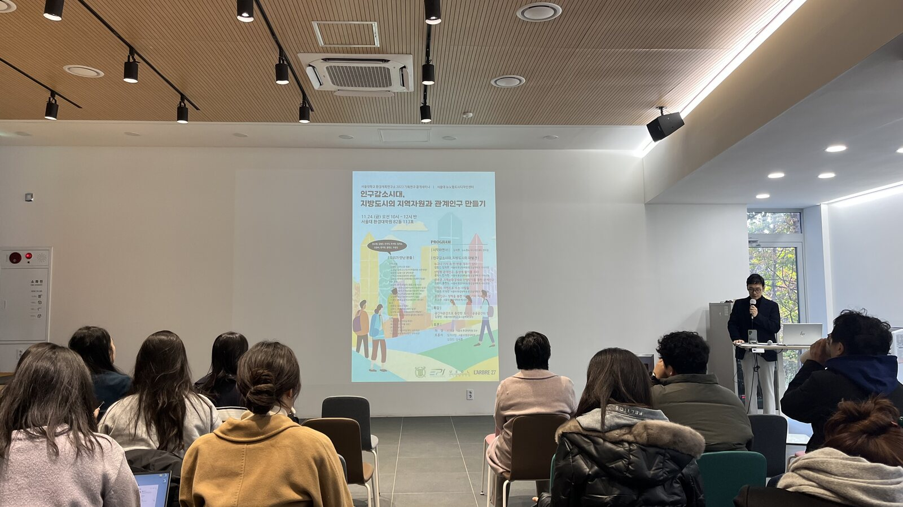
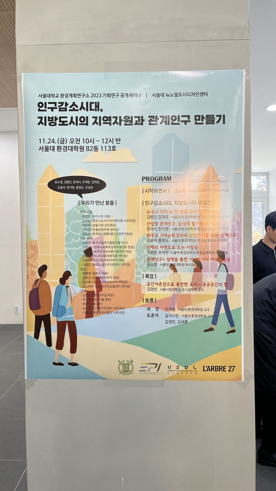
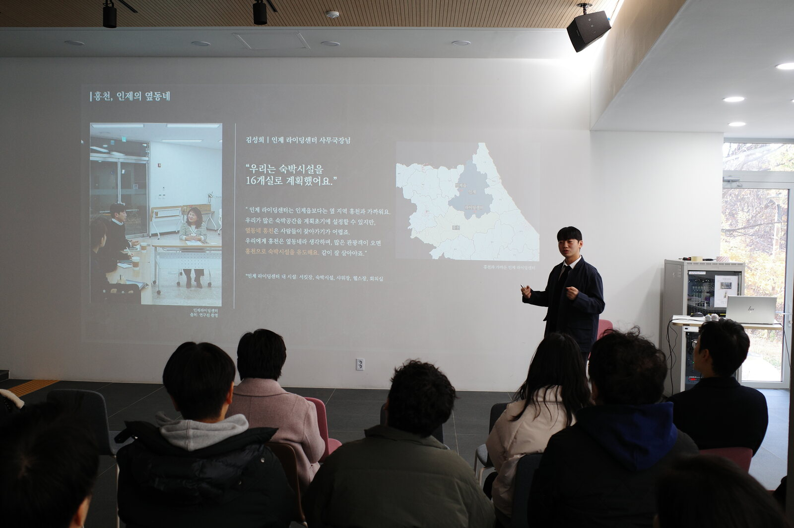
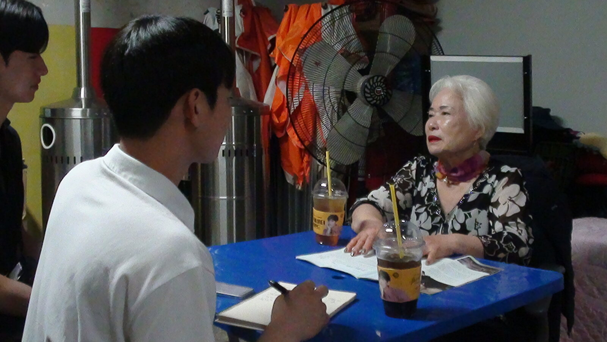
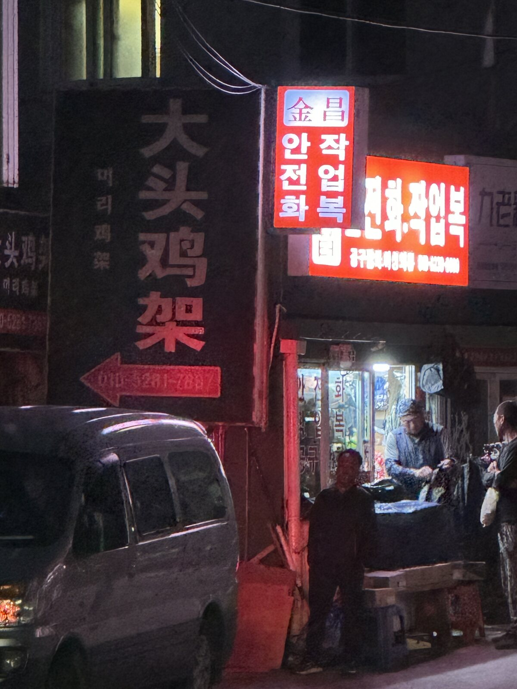
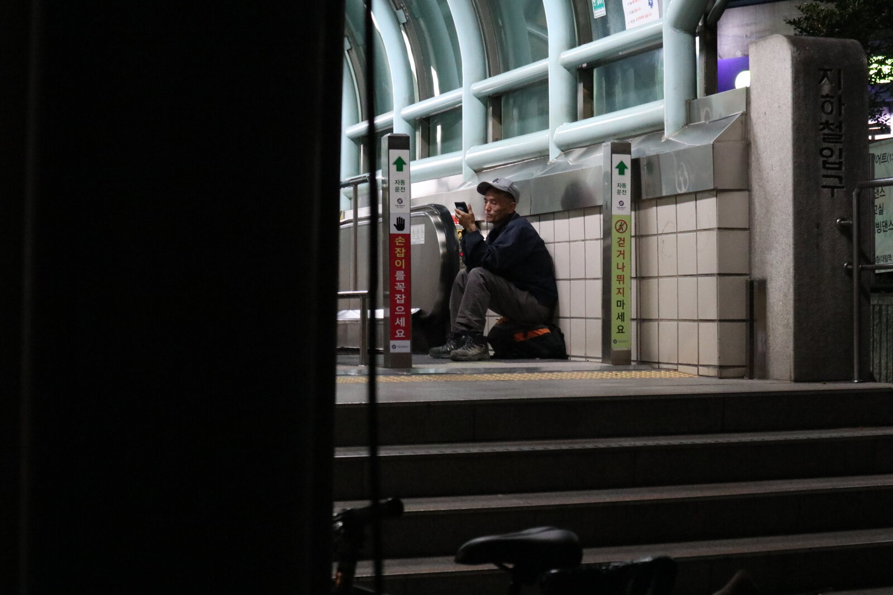
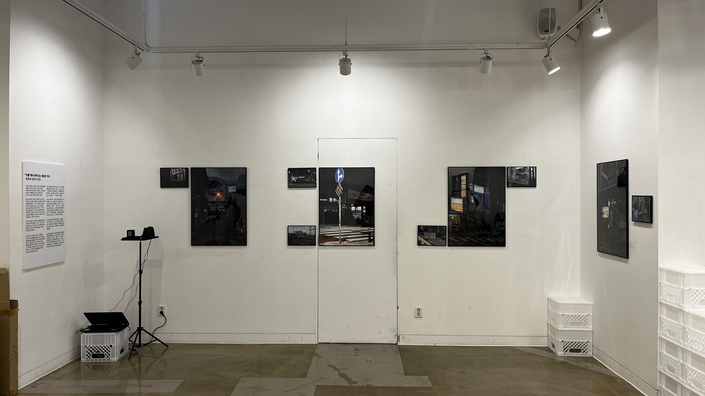
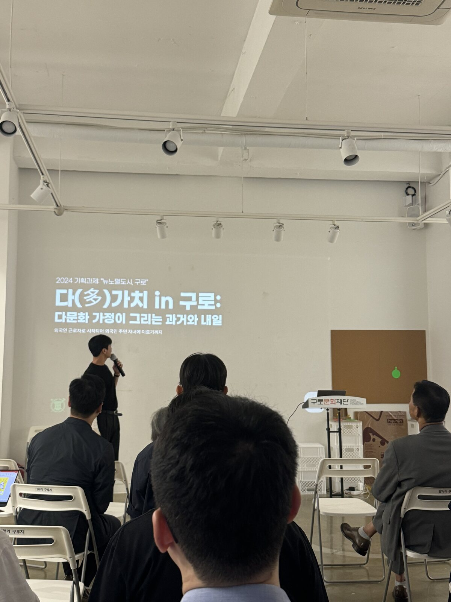

What makes cities better?
Education


Career


About
I study how the built environment shapes uneven urban experiences, with a current focus on urban microclimate, heat-health risk, mobility, and everyday infrastructure. I approach cities as relational systems in which environmental exposure, social vulnerability, and access to care interact across space.
My research has developed through spatial analysis, planning practice, and field-based work in depopulating regions. These experiences have led me to examine how local resources—such as landscape, sport, and community networks—can attract temporary and relational populations, and how close observation of everyday life can inform more inclusive urban policy.
My developing doctoral agenda investigates how chronic heat vulnerability becomes acute emergency demand during extreme heat, using ambulance dispatch data, urban climate indicators, and staged heat-care infrastructure accessibility. Methodologically, I combine GIS, spatial statistics, mobility and emergency data, and policy-oriented empirical research.
Urban·Lifestyle Studies · Inje
Local Resources, Sport, and Relational Population in a Depopulating Region
This presentation examined how nature and sport can be combined as endogenous regional resources in Inje. Rather than treating population decline only as a deficit, the project explored how activity-based experiences can generate repeated visits, temporary stays, and relational population flows.



Spatial Analysis
Applied Accessibility and Land-Use Analysis
Selected work combining grid-based accessibility, land-use masking, and urban form interpretation around major activity centers in Seoul.


Urban Policy · Future City Guro 2025
Translating the Everyday Lives of Korean-Chinese Residents into Urban Development Policy
Guro has a substantial Korean-Chinese migrant population and a distinctive set of everyday needs. Through close observation, interviews, and field documentation, the project sought to translate lived experience into the Future City Guro 2025 urban development plan rather than treating residents only as demographic statistics.





PhD Research
From Chronic Heat Vulnerability to Acute Emergency Demand: Ambulance Dispatch Big Data and Staged Heat-Care Infrastructure in Urban Planning
My current doctoral research direction conceptualizes urban heat as a planning process in which chronic vulnerability—embedded in housing, urban form, mobility exposure, social isolation, and limited adaptive resources—interacts with acute heat shocks to produce emergency medical demand.
Current Research Direction
The study combines geocoded ambulance dispatch records, long-term urban microclimate indicators, short-term heat exposure, demographic vulnerability, and accessibility to staged heat-care infrastructure.
Its central aim is to identify both visible heat risk—where vulnerability and emergency demand coincide—and potential hidden vulnerability, where structurally vulnerable populations may be under-observed in dispatch data.
This is a developing dissertation agenda and will be refined as data availability, study area, and causal identification are finalized.
Publications
Publication Details
This thesis examines how a sports event can function not merely as a temporary attraction, but as a locally embedded mechanism for relational population formation, resource activation, and community coexistence.


Projects
Conferences
Who Am I
This map traces the places where I studied, worked, presented research, conducted fieldwork, traveled, and served. It reflects how my academic interests in cities, regions, and mobility have also been shaped by lived spatial experience.
Seoul, South Korea
Academic training
Master's period at Seoul National University, including work at the Urban Studies and Design Lab and the development of my master's thesis.